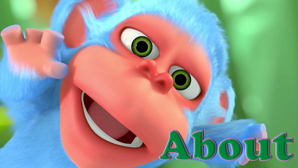

Monkaa is a blue-furred, pink-faced monkey who consumes a crystallized meteorite, making him invincibly strong and too hot to handle. Exploring his new superpowers, Monkaa zooms through an entire universe.
-

Pratik Solanki
Co-Founder -

Nita Ravalji
Co-Founder -

Niyal Parmar
Co-Founder
Monkaa is produced by Weybec, an animation studio located in Mumbai, India and founded by Pratik Solanki, Nita Ravalji and Niyal Parmar.
Project Monkaa is a 5-minute short animated movie, entirely made with Blender and GIMP and other Free/Open Software programs. It has been released as an Open Movie, with all production files and tutorials available on Blender Cloud under a CC-BY license, as well as on a DVD available in the Blender Store.